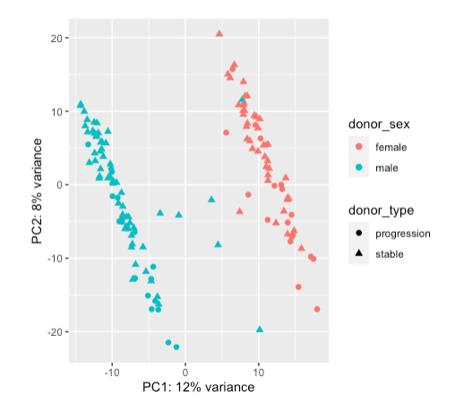
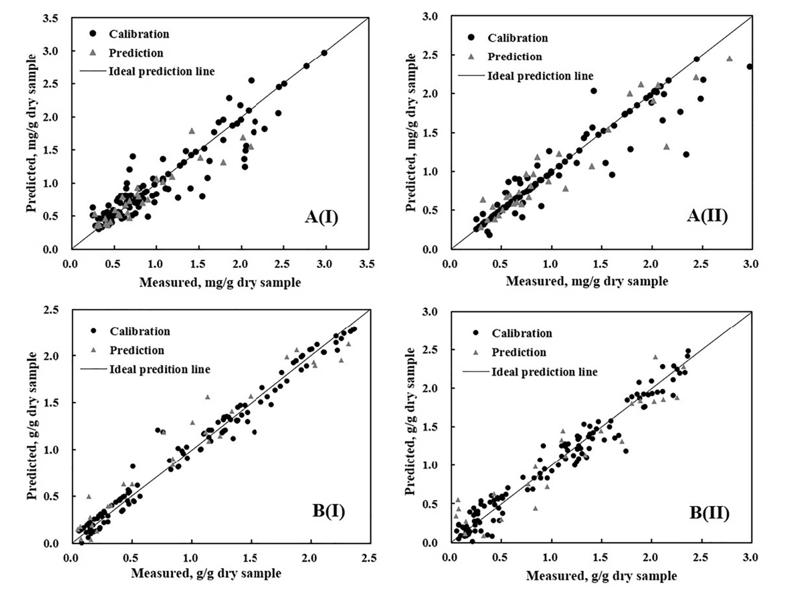

Research Interests:
During my undergraduate research career, I explored novel halogenase genes using the Luoyang soil libraries and constructed nondestructive examination models containing anthocyanins and water components based on optical property parameters.
I worked in the R & D department of Gan & Lee Pharmaceutical Ltd. for two years.
The main focus of the research is to develop methods for the detection of host cell proteins in products and the improvement of fermentation strains.
I am currently a master's student in Translational Biotechnology at the University of Southern California.
Based on my interest in bioinformatics, I joined the Mangul Lab to work on a project for SARS-CoV-2 lineage detection in wastewater.
Education:
MS in Translational Biotechnology, University of Southern California, 2021.
BE in Bio-engineering, Nanjing Agricultural University, 2015.
Publications:
Jing Peng, Ke Wang, Chen Ma, Jiamei Long, Kang Tu, Leiqing Pan, Determination of anthocyanin and moisture content of purple sweet potatoes during the drying process by their optical properties in the 400–1050 nm range, Food Chemistry, Volume 359, 2021, 129811, ISSN 0308-8146, https://doi.org/10.1016/j.foodchem.2021.129811.
Research
SARS-CoV-2 Detection in Wastewater
Wastewater genomic surveillance (WGS) has been proven to detect pathogens across sewershed which is a good representation of the collective waste.
There has been work using different bioinformatics tools to suggest possible ways to monitor SARS-CoV-2 variants and to predict variant abundances via computational approaches.
This project focuses on benchmarking existing methods for lineage detection in wastewater samples containing SARS-CoV-2.
Pridiction of Fetal States with Cardiotocography
In TRGN 515 Advanced Human Genomic Analysis Methods, my final project predict three fetal states (normal, suspect, pathological) by using the random forest.
Cardiotocography is an essential indicator of fetal states.
Earlier detection of a pathological fetus allows physicians to take action to prevent mortality.
The results of machine learning models can inform obstetricians in determining the fetal states.
The accuracy of fetal state prediction model using random forest can reach 0.958.
More important features can give doctors some clues, although it cannot be used as a diagnosis for fetal states.
There are still aspects to be improved in this model.
If more data about suspict group and pathological group can be added, the model can be improved.
Differential Gene Expression within Stage A CLL
In TRGN 510 Basic Foundations in Translational Biomedical Informatics, my final project compare differential gene expression in TCGA within progression and stable of stage A Chronic Lymphocytic Leukemia (CLL) using DeSEQ2.
The whole analysis process is run in the R environment.
The results showed that 117 genes exhibited significant expression differences between males and females.
However, these genes were associated with expression differences between males and females themselves and may not be associated with chronic lymphocytic leukemia.

Gene expression was divided into two clear groups based on gender rather than disease states.
Rapid Detection of Purple Sweet Potato
Purple sweet potatoes provide a rich source of many nutrients, especially anthocyanins.
We investigated the variation of optical absorption and scattering properties of purple potato during the drying process using a single integrating sphere system.
Based on optical property parameters through statistical analysis, we constructed nondestructive examination models containing anthocyanins and water components.
Compared with PLS models, better prediction of moisture and anthocyanins in PSPs were obtained based on SVM models using their optical properties, with R2p values of 0.866-0.917, and RPD of 2.626-3.190. This study indicated the potential of using optical absorption and scattering properties measured by single integrating sphere technology to evaluate the quality of PSPs during drying process.

Measured vs.predicted anthocyanin of purple sweet potatoes based on (I) μa spectra and (II)μs' spectra using SVM model in the range of 400-1050 nm;(B)
Measured vs.predicted moisture content of purple sweet potatoes based on (I) μa spectra and (II)μs' spectra using PLS model in the range of 400-1050nm
Jing Peng, Ke Wang, Chen Ma, Jiamei Long, Kang Tu, Leiqing Pan, Determination of anthocyanin and moisture content of purple sweet potatoes during the drying process by their optical properties in the 400–1050 nm range,
Food Chemistry, Volume 359, 2021, 129811, ISSN 0308-8146.
Host Cell Protein Detection Development
E. coli Strain Optimization
Contact
Contact Ke Wang regarding her published work or any other works.